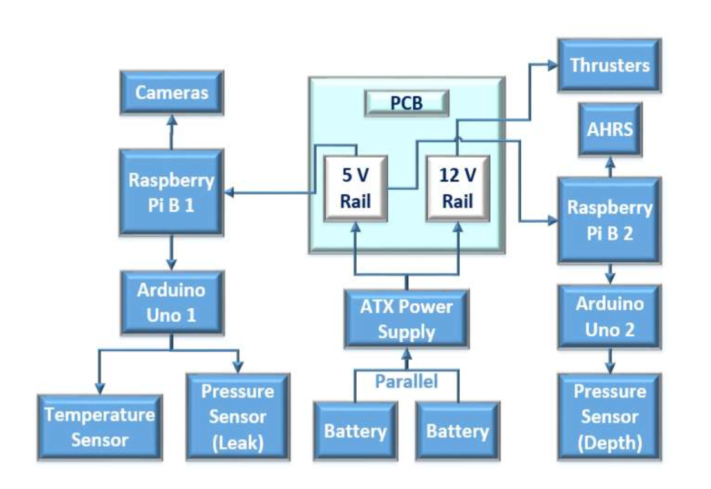
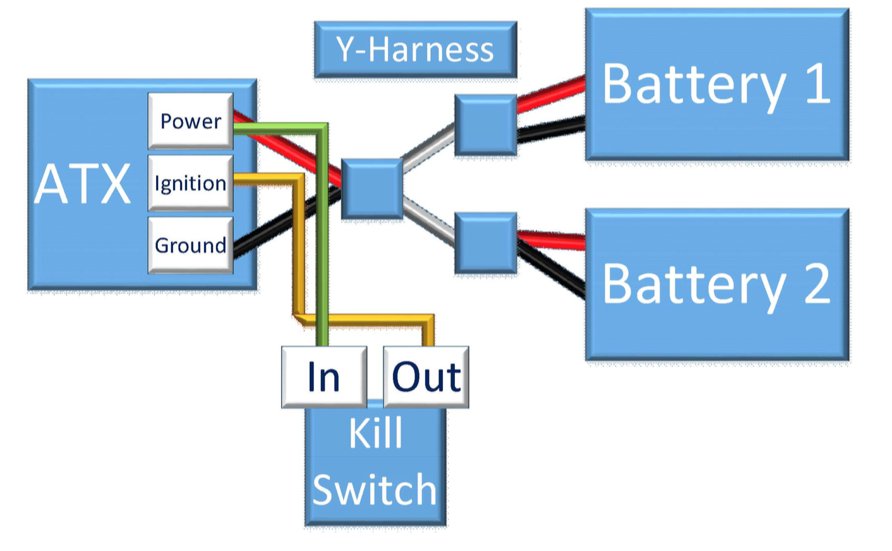
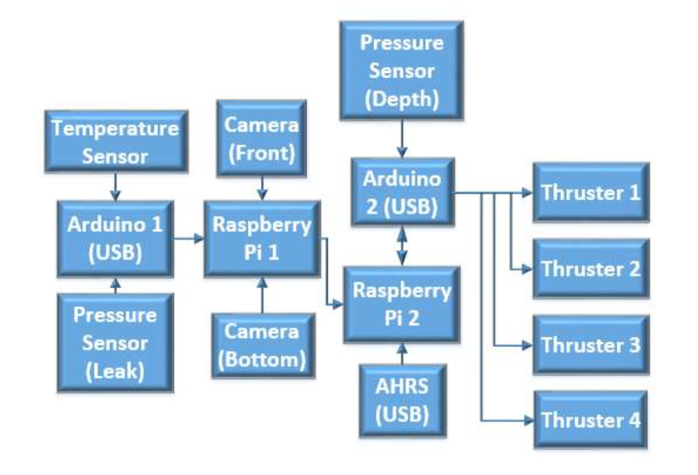
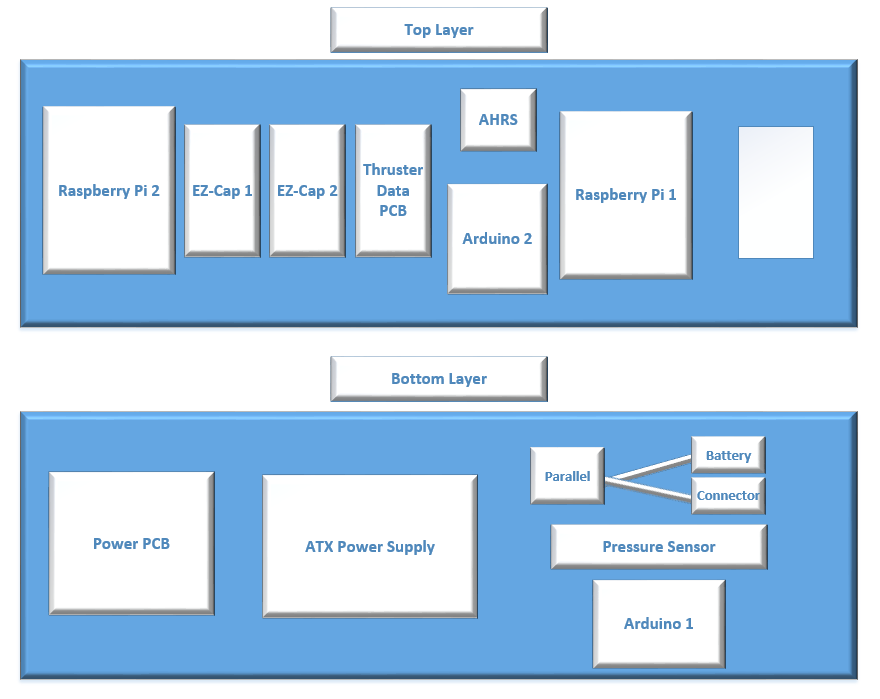

Electrical Team Lead:

Electrical Works
Electrical Subsystem Overview
The electrical system is composed of three main parts: power distribution, sensors, and data transfers. With exception of the custom Printed Circuit Board (PCB) and thruster data transfer PCB, the electrical components were purchased. Wire organization is obtained through the placement of zip ties.
Power Distribution
The electrical system must provided power to the computer, sensors, and thrusters of the AUV. This process can be separated into 2 major parts: providing each component with a voltage within its range, and maintaining that voltage so it never drops out of the range of the component. Several parts are used to fulfill these requirements, including a custom made pcb. The power distribution system consists of the batteries, an ATX power supply, and the custom (PCB) and provides power to all electrical components.
M4 ATX Power Supply & Batteries
The M4-ATX DC-DC from Minibox, which allows the user to monitor and set up parameters for voltages, is used as the power supply. The ATX is equipped with 3.3 V, 5 V, and 12 V pins. It receives potential from the two 14.8 V batteries, converts it, and connects to the power distribution board which divides the voltage depending on what the different sensors, thrusters, and microcontrollers require. The M4-ATX maintains voltages rails at the levels necessary for the electrical components. It also keeps the rails from experiencing unexpected spikes or voltage drops to prevent damaging the electronics. The ATX is connected to the Y-Harness, batteries, and kill switch as shown below:

The Ula is powered by two Multistar Lithium Polymer 14.8 V 10,000mAh batteries. The batteries are placed in parallel utilizing a Y-Harness and provide a 20A current to the system. 14.8V batteries were chosen its common usage and voltage higher than the maximum required voltage for any of the electrical voltage. The batteries allow for 30 minutes of run time.
Sensors
AHRS: Ula utilizes the high-performance Inertial Measurement Unit (IMU) and AHRS in VectorNav’s VN-100. The VN-100 incorporates a set of 3-axis gyroscopes, 3-axis, accelerometers, 3-axis magnetometers, a barometric pressure sensor, and a 32-bit processor to gather data regarding the Ula’s attitude and heading.
The VN-100 was donated courtesy of VectorNav
Pressure Sensors: The Ula employs two Measurement Specialities US 300 sensors for detecting leaks in the hull and to measure depth.
Temperature Sensor: In order to prevent damage in the electronics, a temperature sensor is used to ensure the temperature does not get too high.
Cameras: Two USB Logitech C270 720p 3-MP Widescreen HD Webcams are used for detecting the path markers, buoys, and obstacles.
Data Transfer: Data is transferred by using USB A, USB B connectors, and custom made connectors. The flow of data is depicted in the follow diagram:

Heat Distribution and Board Placement: The electronics placement corresponds to power, data, and heat distribution. The following diagrams depict the final placements:
